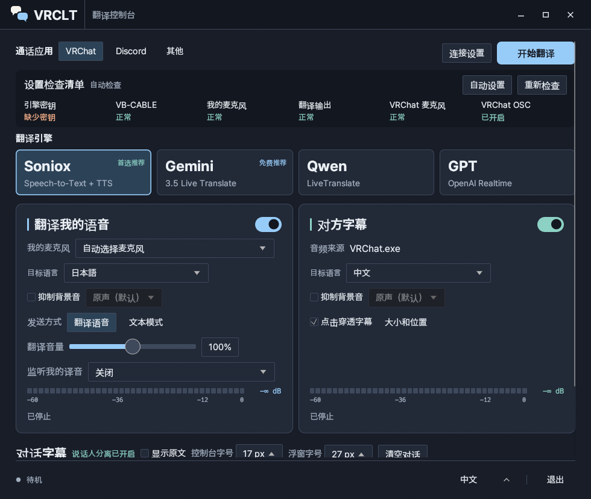
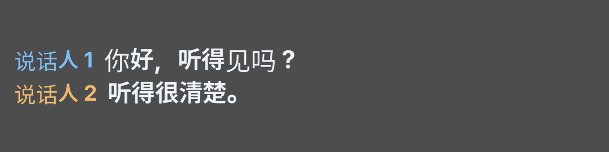
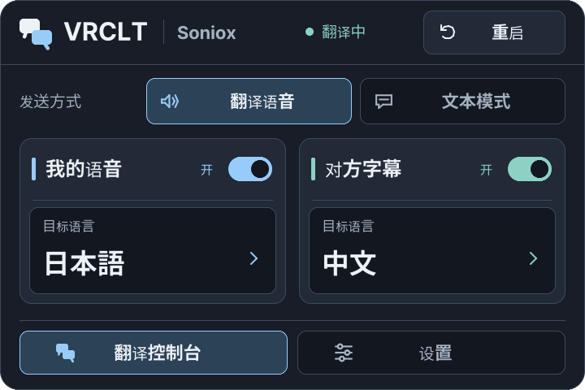
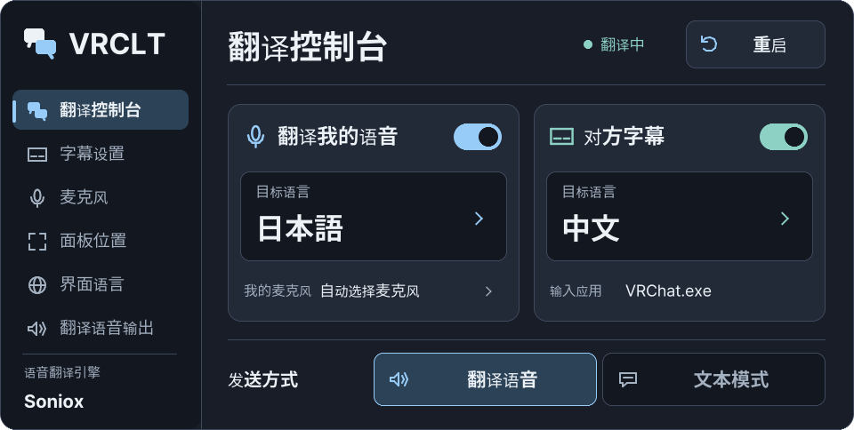

就像是自己学会了另一种语言
对着麦克风说话，翻译后的语音就会传入 VRChat 或 Discord。你可以选择对方的语言。
VRCLT 2.1 在同一个 Windows 窗口中提供麦克风翻译和对方发言的实时字幕，支持 VRChat 和 Discord。
Windows x64 / 翻译服务 API 密钥

对着麦克风说话，翻译后的语音就会传入 VRChat 或 Discord。你可以选择对方的语言。
将对方的话转换为所选语言的字幕。在应用、桌面或 SteamVR 中都能查看。
通过手腕菜单切换语言，在 SteamVR 面板中调整设置，也能将翻译发送到 VRChat 聊天框。



桌面控制台、手腕菜单和 SteamVR 面板。字幕使用示例对话。
下载并打开 Windows x64 的 EXE 文件。ZIP 中包含同一应用。 从 2.1 起，退出应用时会自动安装更新。
前往下载选择翻译引擎，在对应服务获取 API 密钥，并填入应用设置。服务使用费用另计。
查看翻译引擎文字模式和字幕无需 VB-CABLE。发送翻译语音时，将输出设为 CABLE Input，并在聊天应用中选择 CABLE Output 作为麦克风。
VB-Cable应用采用 MIT 开源许可证。翻译使用你自己的 API 密钥，服务提供方可能按使用量收费。请在开始前检查费率和余额。
不需要。仅使用 Windows PC，即可体验语音翻译与桌面字幕。连接 SteamVR 后，还可解锁 VR 字幕与手腕菜单，畅享 PC 与 VR 双场景体验。
音频会发送至你选择的翻译服务。API 密钥和应用设置保存在本机。使用前请了解对应服务的数据处理政策。